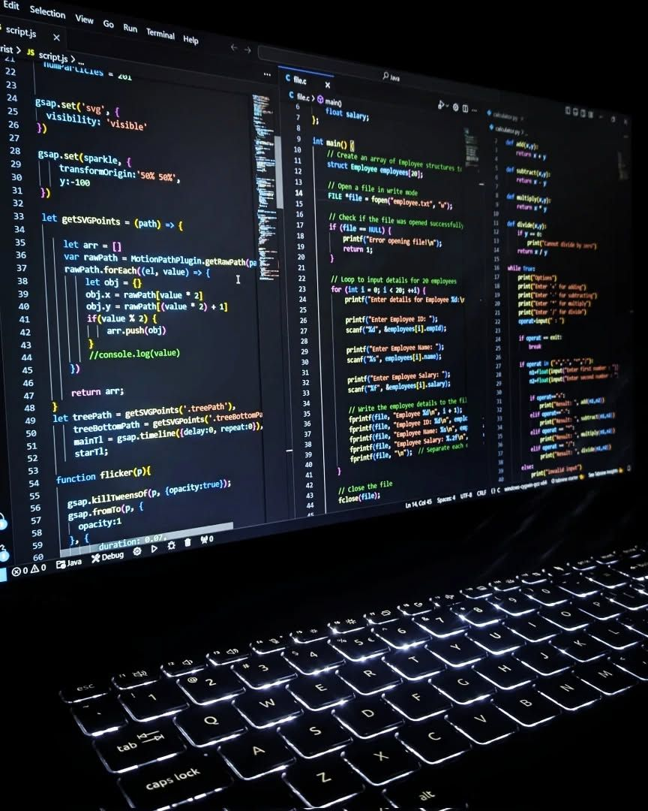

Web Development Projects
Kumpulan proyek pengembangan web yang saya kerjakan, meliputi aplikasi front-end, back-end, dan full-stack. Setiap proyek disertai penjelasan singkat, teknologi yang digunakan, dan peran saya.

Inventory Management System
Web aplikasi untuk mengelola stok barang, penjualan, dan laporan. Dibangun dengan PHP (Laravel) dan MySQL. Saya bertanggung jawab pada backend, API, dan integrasi laporan.
Teknologi: Laravel, MySQL, Bootstrap, Chart.js

Personal Portfolio (This Site)
Website portfolio statis dengan interaksi ringan, animasi, dan responsive design. Fokus pada performa dan aksesibilitas.
Teknologi: HTML, CSS, JavaScript

Task Tracker (Sederhana)
Aplikasi single-page untuk manajemen tugas dengan autentikasi, CRUD, dan penyimpanan serverless. Saya membuat struktur front-end dan integrasi API.
Teknologi: React, Firebase, Tailwind CSS
Project Website Bengkel — Gallery
Klik untuk melihat versi lengkap. Gambar disesuaikan agar rapi dan proporsional pada semua device.